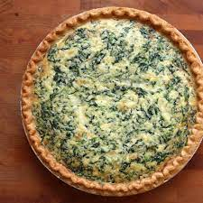

Quick Quiche

When you don't have the time to make a pastry crust, try this quick lunch idea. You may add any other goodies you like, such as ham, chicken, crab, shrimp or broccoli.
Ingredients
- Bacon
- Shredded Swiss cheese
- Melted butter
- Beaten eggs
- Finely chopped onion
- Salt
- All-purpose flour
- Milk
Steps
- Place bacon in a large, deep skillet. Cook over medium high heat until evenly brown. Drain, crumble and set aside.
- Preheat oven to 350 degrees F (175 degrees C). Lightly grease a 9 inch pie pan.
- Line bottom of pie plate with cheese and crumbled bacon. Combine eggs, butter, onion, salt, flour and milk; whisk together until smooth; pour into pie pan.
- Bake in preheated oven for 35 minutes, until set. Serve hot or cold.